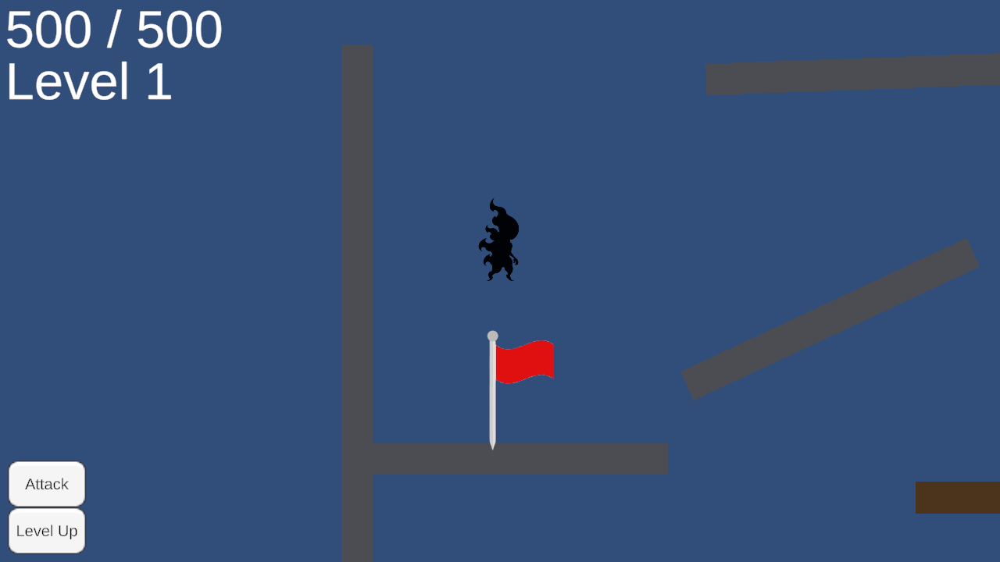
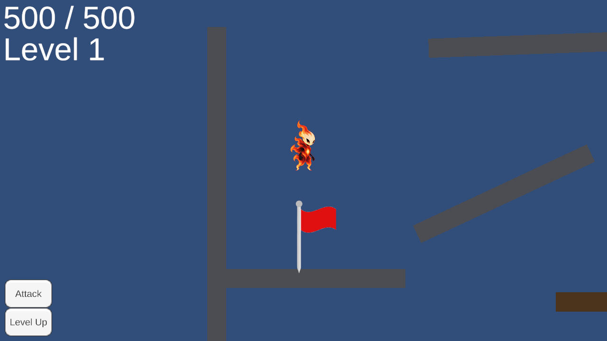

YuchanScene · Player 광원 대상 누락 보완
Player: Default → GA1_Actors. CheckPoint는 밝게, 지형·더미는 어둡게 유지. 원본 두 씬과 공용 프리팹은 보존.
수정 전 · Player가 광원 대상에서 제외
저장 후 다시 연 씬 · Player 색 복원
두 화면은 같은 위치의 에디터 카메라 렌더다. Play 진입 및 런타임 레이어/강도 유지도 확인했으나 이동 중 시각 검증은 미완료다.
진단·수정·검증 기록